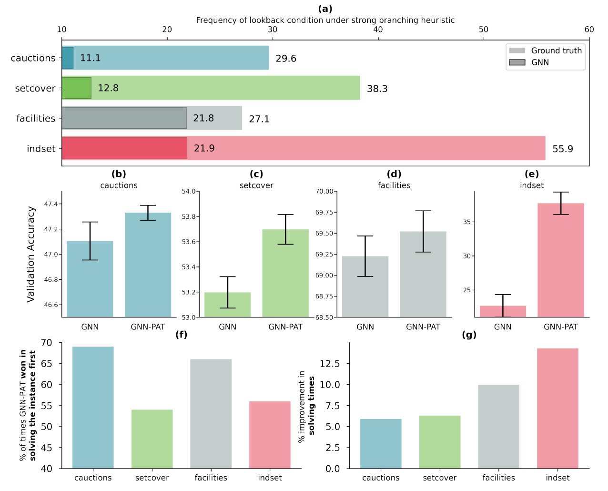

Hi! I’m currently a Postdoctoral Researcher at the Max Planck Institute’s Center for Humans and Machines, working alongside Iyad Rahwan. My research centers on the co-evolution of humans and intelligent machines. I am also deeply engaged in exploring fundamental deep learning methodologies and contributing to projects that leverage AI for scientific discoveries.
I completed my Ph.D at the University of Oxford, sponsored by The Alan Turing Institute, and guided by the amazing researchers Pawan Kumar, Andrea Lodi, and Yoshua Bengio. During my Ph.D., I was also affiliated with the Montréal Institute of Learning Algorithms (Mila), where I spent considerable time of my doctorate studies.
When I am not reading books, I enjoy creating teaching resources, collaborating with researchers, playing sports (table tennis, swimming, gymnastics, rowing, etc.), learning new skills such as portrait drawing.
I have a background in Operations Research, Industrial Engineering, and Mechanical Engineering through my undergraduate and master’s studies, and I enjoyed all of it!
If you’d like to talk about anything related to AI or beyond, please don’t hesitate to get in touch with me.
| Sept. 2017 - May 2023 |
PhD in Machine Learning
University of Oxford | Oxford, United Kingdom The Alan Turing Institute | London, United Kingdom
|
| Sept. 2013 - Feb. 2015 |
M.S. in Operations Research
(3.96/4.00)
Columbia University | New York City, New York
|
| Sept. 2009 - Aug. 2013 |
B.Tech. in Production and Industrial Engineering
(8.69/10.00)
Indian Institute of Technology | New Delhi, India
|
| Feb. 2024 - Present | Postdoctoral Researcher | Max Planck Institute | Berlin, Germany |
| July 2022 - Nov. 2022 | Research Scientist Intern | DeepMind | London, U.K |
| June 2018 - Oct. 2020 | Visiting Researcher | MILA | Montréal, Canada |
| June 2015 - Sept. 2017 | Data Scientist | GenesisMedia LLC | New York City, U.S |
| Feb. 2015 - June 2015 | Data Scientist | American Express | New York City, U.S |
| May 2014 - Aug. 2014 | R&D Data Scientist Intern | The New York Times | New York City, U.S |
| Jan. 2014 - May 2014 | Machine Learning Intern | Wiser | New York City, U.S (Part-time) |
| May 2012 - Aug. 2012 | Research Intern | Innovation Labs, Tata Consultancy Services | Pune, India |
| Events |
ICML AI for Agent-based Modelling Workshop, Co-Organizer, 2022 AI for Global Climate Cooperation Challenge, Co-organizer, 2022 |
| Teaching |
Faculty @ CambridgeSpark (part-time: April '21 - Present), Teaching Assistant @ Oxford Internet Institute (Jan '22- Mar '22, course material) |
| Reviewer | NeurIPS 2021, AI4ABM@ICML Workshop 2022, ICLR 2022, ICML 2023, ICLR 2024 |
| Others |
Strategy Consultant @ Careers Service, University of Oxford (Mar '21 - Jun '21) Co-Convenor / Technology & Data Operations @ COVIRest (Mar '21 - May '21) (A free hotline to connect volunteer global doctors to patients in India looking for COVID diagnosis) |
| 2017 - 2022 |
The Alan Turing Institute Doctoral Scholarship 3rd place, UK-wide 10th Doctoral Researcher Awards 2021 (5 min thesis presentation) |
| 2009 - 2013 |
Undergraduate scholarships/awards
Roll of Honor, Director’s Merit Award, Color, Blazer, Significant Contribution (Sports) |
| Languages / Tools | C/C++, Python, R, Javascript, vim, git, tmux, bash |
| Frameworks | NumPy, Pandas, Jax, PyTorch, SciPy, TensorFlow, SimPy, D3, jQuery, Flask |
| Non-Formal Education |
(2020-2021) Scientific Entrepreneurship, University of Oxford, U.K (based on Harvard Business Cases) (2018) Microsoft Research AI Summer School, Cambridge, U.K (acceptance with funding) (2018) Human-aligned AI Summer School, Prague, Czech Republic (acceptance with funding) |
| Competitions |
(2019) Winner, HKBU Entrepreneurship Pitching Competition, Hong Kong (AI enabled retrospective synthesis for drugs) (2015) Winner, Cornell Tech Hackathon, New York City, U.S(Estimating solar potential using satellite images) (2012) 3rd place, CanSat Competition , Texas, U.S(Design of can-sized satellites to accomplish mission while descending) |
| Sports | Rowing , Table Tennis, Crossfit, Gymnastics, Olympic Lifting |
 |
Lookback for Learning to Branch, TMLR 2022
P. Gupta, E. Khalil, D. Chetélat, M. Gasse, Y. Bengio, A. Lodi, and M. Pawan Kumar [abs] [arXiv] [bibtex] |
|
(Private)-Retroactive Carbon Pricing [(P) ReCaP]: A Market-based Approach for Climate Finance and Risk Assessment
Y Bengio, P. Gupta, D. Radovic, M. P. Scholl, A. Williams, C. Witt, T. Zhang, and Y. Zhang [abs] [pdf] [arXiv] [bibtex] |
|
|
AI for Global Climate Cooperation: Modeling Global Climate Negotiations, Agreements, and Long-Term Cooperation in RICE-N, AAAI Climate Change Symposium 2022
T Zhang, A. Williams, S. Phade, S. Srinivasa, Y. Zhang, P. Gupta, Y. Bengio, and S. Zheng [abs] [pdf] [arXiv] [bibtex] |
 |
Hybrid Models for Learning to Branch, NeurIPS 2020
P. Gupta, M. Gasse, E. Khalil, M. Kumar, A. Lodi, and Y. Bengio [abs] [pdf] [arXiv] [code] [bibtex] |
 |
COVI-AgentSim: an Agent-based Model for Evaluating Methods of Digital Contact Tracing
P. Gupta, T. Maharaj, M. Weiss, N. Rahaman, H. Alsdurf, A. Sharma, N. Minoyan, S. Harnois-Leblanc, V. Schmidt, P. Charles et. al. [abs] [pdf] [arXiv] [code] [blog] [website] [bibtex] |
 |
COVI White Paper
H Alsdurf, Y. Bengio, T. Deleu, P. Gupta, D. Ippolito, R. Janda, M. Jarvie, T. Kolody, S. Krastev, T. Maharaj et. al. [abs] [pdf] [arXiv] [blog] [website] [bibtex] |
|
Revisiting Training Strategies and Generalization Performance in Deep Metric Learning, NeurIPS 2020
K Roth, T. Milbich, S. Sinha, P. Gupta, B. Ommer, and J. Cohen [abs] [pdf] [arXiv] [code] [bibtex] |
 Prateek Gupta
Prateek Gupta